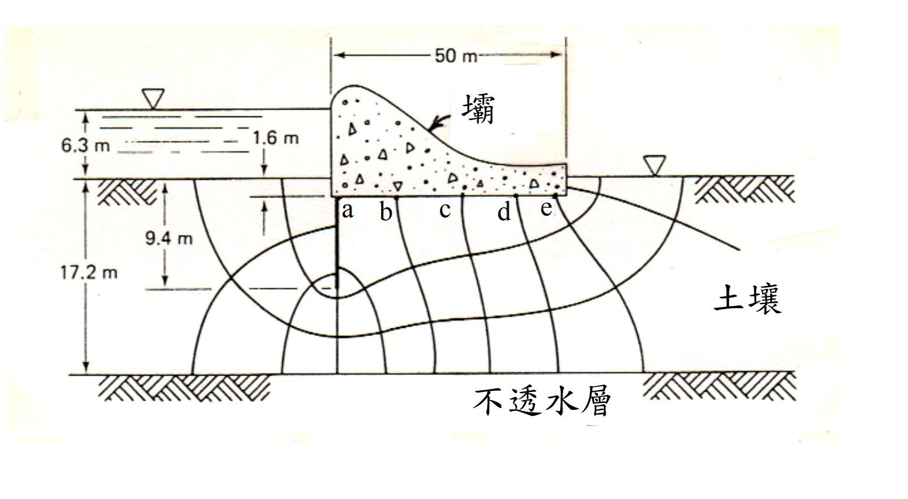

考題編號：SM-2018-3
主分類： SM-U1-2 土壤滲透
副分類： 無
分析法： 有效應力法
標籤： 流網 滲流量 流槽數Nf 等勢降數Nd 上揚壓力 全水頭 Darcy定律
1. 原始題目重述 (Problem Restatement)
三、某混凝土壩，其下方垂直截水牆及流線網如下圖所示。圖中土壤的滲透係數 $k = 3.5 \times 10^{-6}$ m/s。請計算：
(一) 壩底土層之滲流損失（seepage loss）。（5 分）
(二) 於 a、b、c、d、e 點之上揚壓力。（20 分）

圖說：混凝土壩與垂直截水牆之流線網。上游水面至上游海床距離 6.3m，上游海床至壩底距離 1.6m，截水牆底標示 9.4m，不透水層標示 17.2m。壩底寬 50m，點 a, b, c, d, e 位於壩底。
2. 考題核心精神與出題者意圖 (Core Concepts & Examiner's Intent)
- 流線網判讀能力：測驗考生是否能正確數出流槽數（$N_f$）與等勢降數（$N_d$）。
- 幾何關係推導：需從圖面多個尺寸標註中，正確推算出上下游總水頭差（$\Delta H$）以及各點之位置水頭。
- 上揚壓力計算：測驗考生是否清楚上揚壓力（孔隙水壓）與總水頭、位置水頭之間的關係（$u = h_p \cdot \gamma_w$）。
3. 解題戰略地圖與陷阱分析 (Strategic Roadmap & Trap Analysis)
- 步驟 1：幾何尺寸與水頭差解析
- 陷阱：圖面左側標示了 6.3m, 1.6m, 9.4m, 17.2m，基準面為何？部分考生可能誤將 6.3m 直接當作總水頭差。
- 策略：觀察尺寸線，17.2m 與 6.3m 的箭頭共用同一水平線（上游海床）。推算截水牆長度 $9.4 - 1.6 = 7.8$ m，與牆底至不透水層距離 $17.2 - 9.4 = 7.8$ m 相等，此幾何對稱性證實這些尺寸皆自上游海床起算。因此總水頭差 $\Delta H = 6.3 + 1.6 = 7.9$ m。
- 步驟 2：判讀流線網參數
- 流槽數 $N_f$：計算相鄰流線間的通道數。
- 等勢降數 $N_d$：沿著與結構物接觸的最上層流線，計算從上游至下游的等勢線區間數。需特別注意截水牆上游面、下游面及壩底的降數分配。
- 步驟 3：計算滲流量與各點上揚壓力
- 代入 Darcy 定律的流線網公式 $q = k \cdot \Delta H \cdot \frac{N_f}{N_d}$ 計算滲流損失。
- 以壩底為基準面（$z=0$），求出各點的總水頭 $h$，再由 $u = (h - z) \cdot \gamma_w$ 求解孔隙水壓。
3.5 變數層次分析 (Variable Hierarchy Analysis)
最終目標
求出壩底土層單位寬度之滲流損失，以及壩底 a, b, c, d, e 五點之上揚壓力。
本題關鍵公式（依計算順序）
$$ q = k \cdot \Delta H \cdot \frac{N_f}{N_d} $$
$$ \Delta h = \frac{\Delta H}{N_d} $$
$$ h_i = H_{up} - n_i \cdot \boxed{\Delta h} $$
$$ u_i = ( \boxed{h_i} - z_i ) \cdot \gamma_w $$
L1：題目直接給定
| 符號 | 數值 | 說明 |
|---|---|---|
| $k$ | $3.5 \times 10^{-6}$ m/s | 土壤滲透係數 |
| $\gamma_w$ | $9.81$ kN/m³ | 水的單位重 |
L2：需知識點推導
流線網參數判讀
| 符號 | 公式／來源 | 卡關? |
|---|---|---|
| $N_f$ | 圖面判讀（流槽數） | |
| $N_d$ | 圖面判讀（等勢降數） | |
| $n_i$ | 圖面判讀（各點之降數） | |
水頭與幾何關係
| 符號 | 公式／來源 | 卡關? |
|---|---|---|
| $\Delta H$ | $H_w + D_{embed}$（上游水深 + 壩底埋深） | |
| $z_i$ | 基準面設定（取壩底 $z=0$） | |
| $H_{up}$ | 取壩底為基準之上游總水頭 | |
L3：深層知識（不懂就卡住）
| 知識點 | 說明 | 卡關? |
|---|---|---|
| 總水頭差判斷 | 需由圖面尺寸線共用的基準（上游海床）推算總水頭差 $7.9$ m，而非誤用 $6.3$ m。 | |
| 節點降數判讀 | 截水牆上游面較長且流速慢，降數較多（4降）；壩底區間寬，各點間隔為 1 降。 |
4. 步驟化詳細計算過程 (Step-by-Step Detailed Calculation)
(一) 壩底土層之滲流損失
Step 1：判定總水頭差與幾何條件
由圖面左側標註尺寸可知，17.2 m（至不透水層）與 6.3 m（水深）之尺寸線箭頭共用同一水平線，該線為上游海床面。
- 上游水深 = $6.3$ m
- 上游海床至壩底埋深 = $1.6$ m
- 截水牆長度（壩底以下） = $9.4 - 1.6 = 7.8$ m
- 截水牆底至不透水層 = $17.2 - 9.4 = 7.8$ m（尺寸對稱，驗證基準面無誤）
設壩底及下游海床為高程基準面（$z = 0$ m）：
- 上游水面高程：$z_{up} = 1.6 + 6.3 = 7.9$ m
- 下游水面高程：由圖右側可知水面與下游海床齊平，$z_{down} = 0$ m。
- 總水頭差：$\Delta H = 7.9 - 0 = 7.9$ m
Step 2：判讀流線網參數
- 流槽數 ($N_f$)：圖中相鄰流線間之通道數為 $N_f = 4$。
- 等勢降數 ($N_d$)：沿最上層流線（與結構物接觸面）計算等勢線區間數。
- 上游海床至截水牆底（Tip）：交會 4 個等勢線區間 $\rightarrow 4$ 降。
- 截水牆底至壩底角點 a：交會 2 個等勢線區間 $\rightarrow 2$ 降。
- 壩底角點 a 至 e：經過 b, c, d, e，共有 4 個等勢線區間 $\rightarrow 4$ 降。
- 總等勢降數 $N_d = 4 + 2 + 4 = 10$。
- 每降水頭損失：$\Delta h = \frac{\Delta H}{N_d} = \frac{7.9}{10} = 0.79$ m。
Step 3：計算滲流損失
$$ q = k \cdot \Delta H \cdot \frac{N_f}{N_d} $$
$$ q = 3.5 \times 10^{-6} \times 7.9 \times \frac{4}{10} = 1.106 \times 10^{-5} \text{ m}^3\text{/s/m} $$
$\boxed{q = 1.106 \times 10^{-5} \text{ m}^3\text{/s/m}}$
(二) 於 a、b、c、d、e 點之上揚壓力
以壩底為高程基準面（$z = 0$ m），則各點之位置水頭 $z_i = 0$。
總水頭 $h_i = h_{p,i} + z_i = h_{p,i}$（壓力水頭即等於總水頭）。
上揚壓力 $u_i = h_{p,i} \cdot \gamma_w = h_i \cdot \gamma_w$。
上游初始總水頭 $H_{up} = 7.9$ m。各點總水頭計算如下：
1. a 點
- 累積降數 $n_a = 6$
- $h_a = H_{up} - 6 \cdot \Delta h = 7.9 - 6 \times 0.79 = 7.9 - 4.74 = 3.16$ m
- $u_a = h_a \cdot \gamma_w = 3.16 \times 9.81 = 30.9996 \approx 31.00$ kPa
$\boxed{u_a = 31.00 \text{ kPa}}$
2. b 點
- 累積降數 $n_b = 7$
- $h_b = H_{up} - 7 \cdot \Delta h = 7.9 - 7 \times 0.79 = 7.9 - 5.53 = 2.37$ m
- $u_b = h_b \cdot \gamma_w = 2.37 \times 9.81 = 23.2497 \approx 23.25$ kPa
$\boxed{u_b = 23.25 \text{ kPa}}$
3. c 點
- 累積降數 $n_c = 8$
- $h_c = H_{up} - 8 \cdot \Delta h = 7.9 - 8 \times 0.79 = 7.9 - 6.32 = 1.58$ m
- $u_c = h_c \cdot \gamma_w = 1.58 \times 9.81 = 15.4998 \approx 15.50$ kPa
$\boxed{u_c = 15.50 \text{ kPa}}$
4. d 點
- 累積降數 $n_d = 9$
- $h_d = H_{up} - 9 \cdot \Delta h = 7.9 - 9 \times 0.79 = 7.9 - 7.11 = 0.79$ m
- $u_d = h_d \cdot \gamma_w = 0.79 \times 9.81 = 7.7499 \approx 7.75$ kPa
$\boxed{u_d = 7.75 \text{ kPa}}$
5. e 點
- 累積降數 $n_e = 10$
- $h_e = H_{up} - 10 \cdot \Delta h = 7.9 - 7.9 = 0$ m
- $u_e = h_e \cdot \gamma_w = 0 \times 9.81 = 0$ kPa
$\boxed{u_e = 0 \text{ kPa}}$
5. 關鍵爭議點與進階探討 (Critical Issues & Advanced Discussion)
- 總水頭差（$\Delta H$）的判讀爭議：部分考生可能直接將圖面標示的 $6.3$ m 誤認為總水頭差。但在嚴謹的工程圖學標註中，尺寸線的箭頭起訖點具有決定性意義。本題中 $6.3$ m 的底端箭頭與 $17.2$ m 的頂端箭頭交會於上游海床線，因此 $6.3$ m 僅為上游水深。必須加上上游海床至下游海床的高程差（$1.6$ m），才是真正的總水頭差 $7.9$ m。
- 【備考註記】：若考場上閱卷者（出題老師）本身的圖面標示有瑕疵，原意欲將 $6.3$ m 作為總水頭差，則計算結果將為：$\Delta h = 0.63$ m，$q = 8.82 \times 10^{-6}$ m³/s/m，$u_a = 24.72$ kPa, $u_b = 18.54$ kPa, $u_c = 12.36$ kPa, $u_d = 6.18$ kPa, $u_e = 0$ kPa。但在缺乏其他說明的狀況下，依照幾何尺寸嚴格推導出 $7.9$ m 展現了更全面的工程識圖能力，是防禦性最高的解答策略。